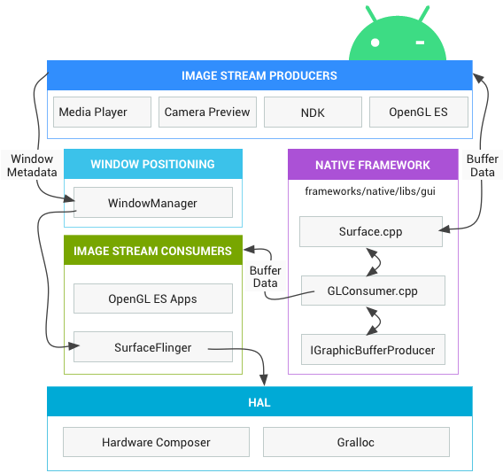
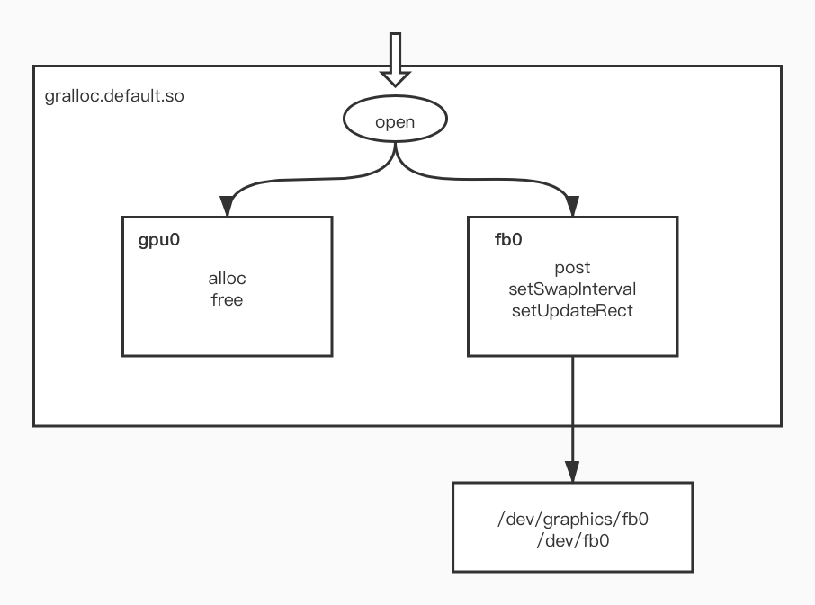

- GUI 系统综述
- BufferQueue 与图像数据流
- Gralloc
- ANativeWindow
- FrameBufferNativeWindow
- FramebufferSurface
- 最后
GUI 系统综述
GUI（Graphical User Interface）即图形用户界面，官方架构图如下：

IMAGE STREAM PRODUCERS 图像流生产方：生成图形缓冲区以供消耗的任何内容，例如 OpenGL ES、Canvas 2D 和 mediaserver 视频解码器都是图像流生产方。
IMAGE STREAM CONSUMERS 图像流消耗方：图像流最常见的消耗方是 SurfaceFlinger，该系统服务接收来自于多个源的数据缓冲区，组合它们，并将它们发送给显示设备。除了 SurfaceFlinger，OpenGL ES 应用也可以消耗图像流，例如相机应用会消耗相机预览图像流，另外非 GL 应用也可以消耗图像流，例如 ImageReader 类。SurfaceFlinger 使用 OpenGL 和 Hardware Composer 来合成一组 Surface。
WindowManager：WindowManager 会控制 window 对象，window 是用于容纳视图对象的容器。window 对象由 Surface 对象提供支持。WindowManager 会监督生命周期、输入和聚焦事件、屏幕方向、转换、动画、位置、变形、Z 轴顺序等窗口事件。WindowManager 会将所有窗口元数据发送到 SurfaceFlinger，以便 SurfaceFlinger 可以使用这些数据合成 Surface。
Surface：无论开发者使用什么渲染 API，一切内容都会渲染到 Surface 上，Surface 即供 UI 应用程序绘制图像的 “画板”，承载应用要渲染的图像数据。应用端可以使用 OpenGL ES 、Vulkan 或 Canvas API 渲染到 Surface 上。
Hardware Composer 硬件混合渲染器(HWC)：用于确定组合缓冲区的最有效方式，作为 HAL 硬件抽象层，其实现是基于特定设备的，通常由屏幕硬件设备制造商 (OEM) 完成。SurfaceFlinger 在收集可见层的所有缓冲区后，便会询问 HWC 应如何进行合成。如果 HWC 将层合成类型标记为客户端合成，则 SurfaceFlinger 会合成这些层，然后 SurfaceFlinger 会将输出缓冲区传递给 HWC。
Gralloc：包括 fb 和 gralloc 两个设备，fb 负责打开内核中的 FrameBuffer、初始化配置，并提供了 post、setSwapInterval 等操作接口；gralloc 负责管理帧缓冲区的分配和释放。作为 HAL，上层都会通过 Gralloc 来访问内核显示设备的帧缓冲区。
BufferQueue 与图像数据流
图像流由生产方流向消耗方，这种典型的生产者-消费者模型都是需要一个缓冲区队列的，BufferQueue 就是这个队列，它将图像流生产方与消耗方结合在一起，并且可以调解图像流从生产方到消耗方的固定周期。

如图，生产方通过 dequeue 向 BufferQueue 申请空闲的缓冲区，将图像数据存放进去，然后通过 queue 移交给 BufferQueue。消耗方通过 acquire 从 BufferQueue 中获取图像数据缓冲区，然后进行合成显示或处理后，再将缓冲区交还给 BufferQueue。
对应到显示场景，应用程序作为生产方将图像数据交给 BufferQueue；SurfaceFlinger 则作为消耗方从 BufferQueue 中取出来，然后合成图像数据。
Gralloc
FrameBuffer 是 Linux 内核中图像硬件的抽象描述，是一块包含屏幕显示信息的缓冲区。FrameBuffer 对上层提供了统一的显示驱动，设备节点为 /dev/graphics/fb 或 /dev/fb，其中 fb0 标示第一个 Monitor，当前系统实现中只用到了一个显示屏。
Android 的各个子系统通常不会直接使用硬件的内核驱动，而是通过 HAL 层间接使用。显示系统也是如此，上层统一通过 HAL 层的 Gralloc 来操作内核的帧缓冲区。
先来看 Gralloc 模块的加载，它是在 FramebufferNativeWindow（OpenGL ES 的本地窗口之一，下面还会提到）的构造函数中加载的：
1 | //frameworks/native/libs/ui/FramebufferNativeWindow.cpp |
hw_get_module 函数是上层加载 HAL 库的统一入口，不论是哪个硬件厂商提供的 HAL 库，都是通过此函数来加载的。hw_get_module 方法会在指定的路径下查找与 GRALLOC_HARDWARE_MODULE_ID 匹配的库，默认会使用 Android 原生态的实现：gralloc.default.so，此 so 主要由 gralloc.cpp，framebuffer.cpp，mapper.cpp 三个源文件编译生成。
加载 Gralloc 后，会分别打开 fb（frameBuffer） 和 gralloc（gpu）设备，framebuffer_open 和 gralloc_open 最终都会调用到 gralloc.cpp 的 gralloc_device_open 方法，只不过传入的设备名不一样：
1 |
|
书中分析了 fb 及 gralloc 设备的打开过程源码，本文不再分析，源码见：http://androidxref.com/7.0.0_r1/xref/hardware/libhardware/modules/gralloc/gralloc.cpp#gralloc_device_open 。直接来看 fb 及 gralloc 设备的主要功能：

gralloc 设备比较简单，主要负责图形缓冲区的分配与释放。下面来看下 fb 设备的方法说明：
1 | //将 buffer 数据 post 到显示屏上，要求 buffer 必须与屏幕尺寸一致, |
ANativeWindow
Android 的 GUI 基于 OpenGL ES，而 OpenGL ES 是跨平台的，并不是针对某一个特定的操作系统平台设计的。这就需要一个本地窗口来适配特定的系统环境，充当 OpenGL ES 与特定系统的中介。
EGLNativeWindowType 是 EGL 中定义的平台相关类型，它在不同系统中对应的是不同的数据类型，而在 Android 中对应的是 ANativeWindow 指针：
1 | //framework/native/opengl/include/egl/Eglplatform.h //Android 系统 |
ANativeWindow 结构如下：
1 | struct ANativeWindow{ |
从 ANativeWindow 的结构可以看出，它更像是一份协议，规定了一个本地窗口的形态和功能。FrameBufferNativeWindow 和 Surface 都履行了这份协议，可以看作 ANativeWindow 的两个实现。
FrameBufferNativeWindow
在介绍 Gralloc 时提到 Gralloc 设备是在 FrameBufferNativeWindow 的构造函数中打开的，这代表 FrameBufferNativeWindow 可以直接通过 Gralloc 操控屏幕帧内容的展示；在介绍 ANativeWindow 时提到 FrameBufferNativeWindow 实现了 ANativeWindow 接口，这代表上层可以通过 ANativeWindow 中定义的方法来调用 FrameBufferNativeWindow。
FrameBufferNativeWindow 的构造函数关键代码如下：
1 | //frameworks/native/libs/ui/FramebufferNativeWindow.cpp |
FrameBufferNativeWindow 的构造函数主要做了以下工作：
- 加载 Gralloc 模块，分别打开 fb 和 gralloc 设备
- 根据 fb 设备描述来初始化 FrameBufferNativeWindow，包括申请缓冲区及初始化本地窗口属性值
- 根据 FrameBufferNativeWindow 的实现来填充 ANativeWindow 中的”协议”
可以看到帧缓冲区的数量为 mNumBuffers，FrameBufferNativeWindow 对应的是 1 个真实的物理屏幕，那为什么要准备多个 buffer 呢？这就是所谓的双缓冲/多缓冲技术，至少 2 个buffer，一个为 screen-buffer（用户直接看到的东西），一个为 off-screen-buffer（即将呈现给用户的东西），通过 swap buffer 交替显示，避免屏幕撕裂现象，以保证用户任何时候看到的都是完整的画面。
再来看 FrameBufferNativeWindow 中另一个重要的 dequeueBuffer 函数，代码如下：
1 | int FramebufferNativeWindow::dequeueBuffer(ANativeWindow* window, |
dequeueBuffer 函数就是从 FramebufferNativeWindow 创建的缓冲区队列中取出一块空闲可用的 buffer，如果当前缓冲区队列中没有空闲的 buffer，则当前线程阻塞等待，等待其他线程释放图形缓冲区。
mNumFreeBuffers 用来描述可用的空闲 buffer 个数，mBufferHead 指向下一次申请的图形 buffer 的位置。由于是循环利用缓冲区，所以如果 mBufferHead 的值超过 mNumBuffers，就需要置 0。
再来看与之对应的 queueBuffer 函数：
1 | int FramebufferNativeWindow::queueBuffer(ANativeWindow* window, |
这里将调用 fb 设备的 post 方法将 buffer 渲染到屏幕上，然后修改空闲 buffer 个数，最后唤醒正在申请图形 buffer 出列却因无空闲 buffer 而睡眠的线程。
FramebufferSurface
Android 4.2 版本后不再使用 FramebufferNativeWindow，随着版本的升级，相关的代码一直在变动，从 FramebufferNativeWindow 到 SurfaceTextureClient，再到 FramebufferSurface… 变动历史可参考：https://www.cnblogs.com/bbqzsl/p/7826141.html 。
本以为 FramebufferSurface 已经稳定，可发现即使是 FramebufferSurface，在 7.0 和 9.0 版本上的实现也不相同。这里就不再纠结各版本的 API 变动，只对比下 FramebufferNativeWindow 与 FramebufferSurface 的送显逻辑。
FramebufferNativeWindow 被 FramebufferSurface 代替后，原本 FramebufferNativeWindow 中的 fb 设备交由 HWComposer 管理，FramebufferSurface 中不再直接持有 fb 设备，而是通过 HWComposer 去控制屏幕显示。
对上层来说，FramebufferNativeWindow 与 FramebufferSurface 可以看作真实的物理屏幕，它们都直接或间接的与 fb 设备交互。所谓的 “上层”，一般就是指 SurfaceFlinger，在较早版本，它可以这样通过 FramebufferNativeWindow 将内容送显：
1 | //Android 2.3.7 版本 |
可以看到上面通过 FramebufferNativeWindow 送显的逻辑比较简单，调用链为： SurfaceFlinger -> DisplayHardware -> FramebufferNativeWindow -> fb 设备 。
下面来看 FramebufferSurface 的送显逻辑，它便没那么直观了：
1 | //Android 7.0 |
你可能会有疑问，swapBuffers 是怎么触发 FramebufferSurface 的 onFrameAvailable 回调的呢？它是通过生产者-消费者模式通知调用 onFrameAvailable 的，具体代码就不再列出，可以参考： https://www.cnblogs.com/ztguang/p/12645201.html 。
最后
Android 手机屏幕内容是怎么显示的，底层的显示原理到底是怎样的？强烈的好奇心驱使，开始 GUI 系统的学习，跟预想的一样，它很复杂、有难度。但只要不停止，对 GUI 系统的认知就必然会越来越清晰。目前已大概学习了从 SurfaceFlinger 到物理屏幕的显示过程，后面继续由底而上，学习 SurfaceFlinger、Surface、Vsnyc、Choreographer 等，打通到 View 的 draw，相信就会有 “拨开云雾见天日” 的感觉了。